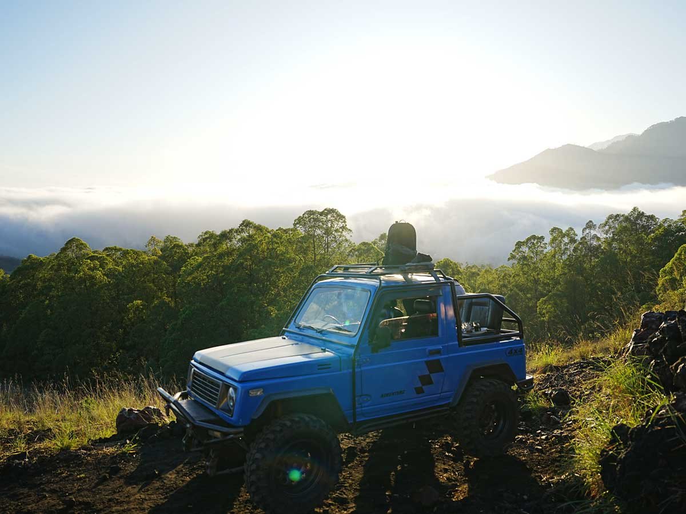
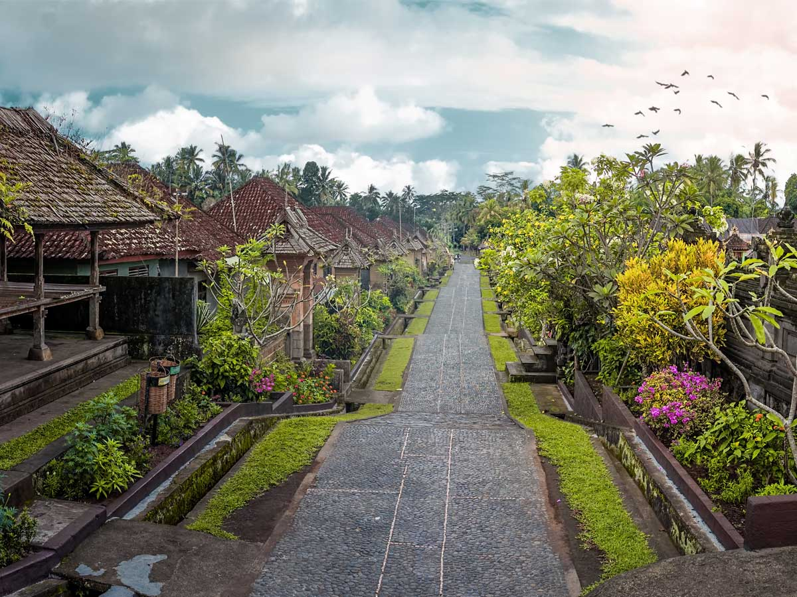
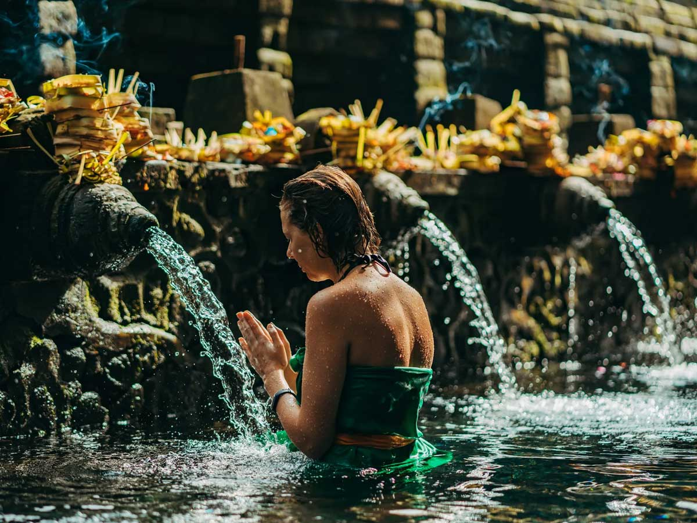

What You'll Do

Mount Batur Jeep Sunrise
We set off before dawn so a 4x4 jeep can carry you up the black-lava slopes of Mount Batur to a viewpoint for sunrise over the caldera and lake - no strenuous hike required. Coffee in hand, watch the sky turn as the volcano wakes up. The easiest way to catch Bali's most famous sunrise.

Penglipuran Village
One of the cleanest, best-kept traditional villages in Bali - a Bali Aga village with a single spotless main avenue lined with matching gates and courtyard homes. Step into a family compound and see a way of life that has barely changed in centuries. It sits right on the route down from Batur.

Tirta Empul Holy Water Temple
Bali's most sacred spring temple, where Balinese Hindus have performed the melukat purification ritual for over a thousand years. You're welcome to join the ritual yourself - we'll arrange a sarong and walk you through the etiquette so you can take part with respect.

Tegalalang Rice Terrace & Coffee
We finish at the iconic Tegalalang rice terraces, with a stop at a nearby plantation to taste Balinese coffees and the famous kopi luwak. A relaxed, scenic way to close a very early morning.